L16 · Agent Memory：让模型把你教过的东西带进下一次会话
L15 讲的是一次长会话内部；本讲讲从一次会话带到下一次的东西。周一你纠正过模型「只跑快速测试」，周二新会话它又犯同样的错——因为新会话是一段全新的对话。答案是笔记：模型写、harness 存、下一次会话读回来。第 1 部分讲创建和存储：留什么、笔记长什么样、怎么改、谁在什么时候写、放在哪；第 2 部分讲加载和检索：一次性加载、按行索引、三层加载、按需读一条、搜索旧笔记，以及笔记过时之后怎么办。
课件 slides.md slides.pdf 本页导读约 30 分钟
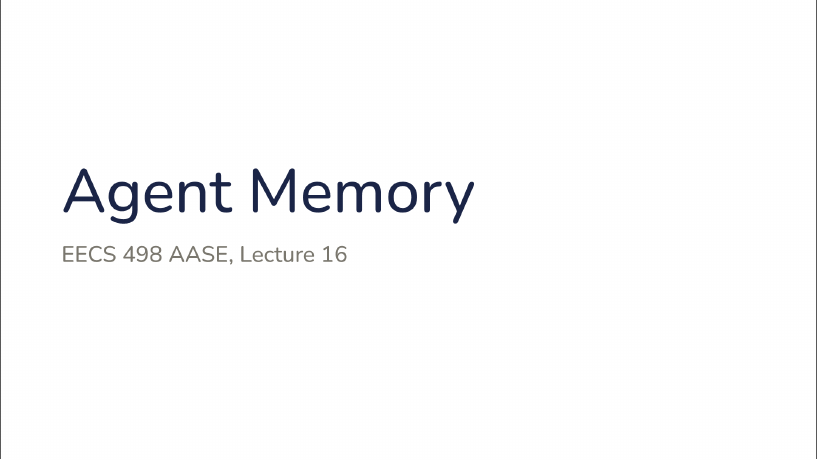
讲者备注：这是第 16 讲，Agent Memory。第 15 讲讲的是一次长会话内部发生什么，今天讲从一次会话带到下一次的东西。
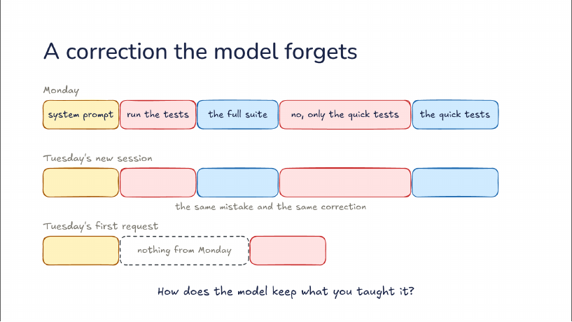
讲者备注：周一，请求从系统提示开始。你说：跑测试。模型跑了全套，要好几分钟。你说：不，只跑快速测试。从那以后它就只跑快速测试。周二的新会话带来同样的错误和同样的纠正——周一教它的东西一点都没到周二。
原因在这里：周二的第一个请求装着系统提示和你的新消息，周一的什么都没有。第 15 讲说过模型在请求之间什么都不保留；新会话更进一步，harness 开启一段全新的对话，周一的那段根本不会被发送。所以今天的问题是：模型怎么留住你教它的东西？答案是笔记：模型写，harness 存，下一次会话读回来。
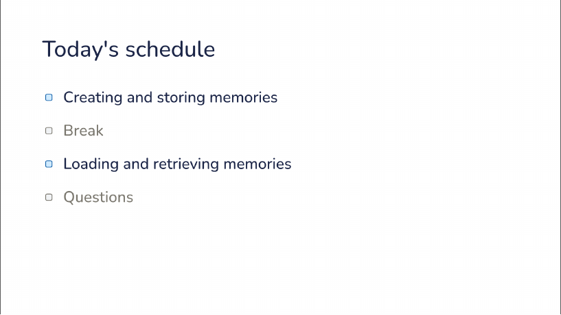
讲者备注：两部分。第一部分是创建和存储记忆：模型该从一次会话里留下什么，harness 把它放在哪；课间之后，第二部分是在之后的会话里加载和检索这些记忆；最后答疑。
记忆只留一句以后用得上的话
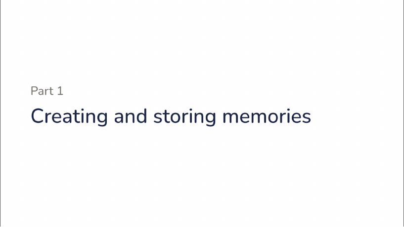
讲者备注：第一部分，创建和存储记忆。
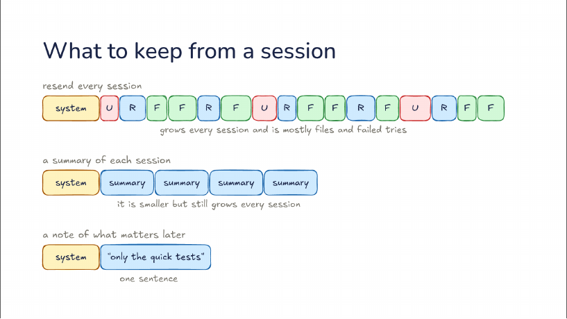
讲者备注：什么能把周一带进周二？每一行都从黄色的系统提示开始，然后是红色的你的消息（U）、蓝色的模型回复（R）、绿色的读过的文件（F）。最简单的答案是每次会话都重发：它每次都增长，而且大部分是文件和失败的尝试——文件内容其实还在磁盘上，尝试也没成功。
其次是系统提示加每次会话的一份总结，就像第 15 讲 compaction 做的总结。它更小，但仍一份一份地随会话增长；而且总结留下的是当天要紧的东西，而不是下周要紧的。
或者：系统提示加一条以后要紧的笔记。周一学到的东西是一句话，笔记里只装这句：只跑快速测试。这就是记忆要留的东西。
模型是写的人，在会话中、在它学到东西的那一刻
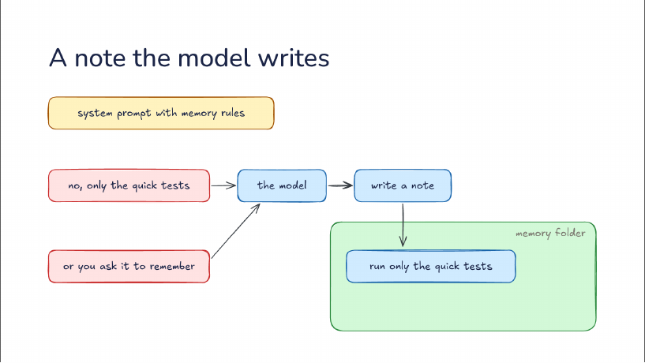
讲者备注：模型能记住之前，harness 需要两样东西：带记忆规则的系统提示，说明笔记放哪、什么值得存；以及磁盘上一个记忆文件夹。现在你说：不，只跑快速测试。模型注意到自己被纠正了，它的回答里包含一次写笔记的工具调用，笔记落进文件夹：只跑快速测试。这个工具常常就是模型用来改代码的那个文件工具；有些 harness 给它一个专门的记忆工具。
或者你直接让它记住。无论哪种，模型都是写的人，就在会话里、在它学到东西的那一刻。
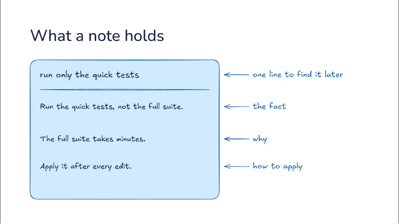
讲者备注：笔记顶部是日后找到它的一行：只跑快速测试。之后的会话在打开笔记之前先看到这一行，所以这一行得说清笔记讲的是什么。然后是事实：跑快速测试，不跑全套。
然后是为什么：全套要好几分钟。有了「为什么」，之后的会话能处理规则没覆盖的情况——如果你是故意要跑全套，模型能分辨这不是笔记说的那种错误。最后是怎么用：每次编辑之后。
留下下周仍然成立、且代码里没有的东西
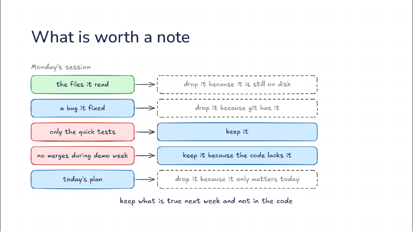
讲者备注：周一的会话远不止一次纠正：读过的文件、修掉的一个 bug、只跑快速测试、demo 周不合并、今天的计划。哪些值得笔记？三样丢掉：读过的文件，因为还在磁盘上；修掉的 bug，因为 git 里有；今天的计划，因为只在今天有用。
两样留下：只跑快速测试；demo 周不合并，因为代码里没有它。规则是：留下下周仍然成立、并且不在代码里的东西。
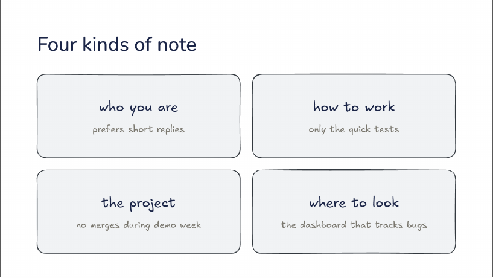
讲者备注：留下的东西分四类。第一类是你是谁：比如你喜欢简短的回复。第二类是怎么干活，「只跑快速测试」就是这一类。第三类是项目，「demo 周不合并」是关于项目的事实，不是关于你的。
第四类是去哪里找：跟踪 bug 的面板、发布公告的频道。笔记写的是东西在哪，而不是里面有什么。
一事一笔记；没人看着时权限更小
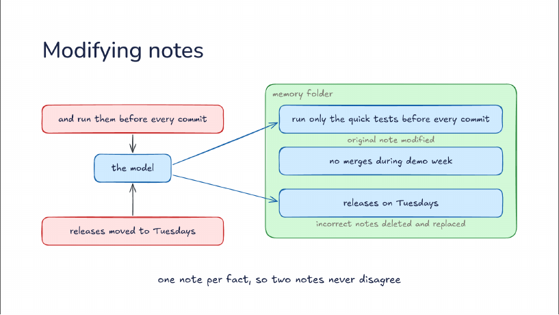
讲者备注：几周后，记忆文件夹里有三条笔记：只跑快速测试；demo 周不合并；周五发布。然后你说：并且每次提交前都跑。模型有了一条新事实要存。它不会再加第二条测试笔记，而是改它已有的那条，现在写着：每次提交前只跑快速测试——修改原笔记，而不是在旁边新加一条。
后来你说：发布改到周二了。周五那条笔记现在是错的，于是被删掉、换成一条新笔记：周二发布。错误的笔记被删除替换，错的那天就消失了。一事一笔记，所以两条笔记从不矛盾：每次写之前，模型先检查有没有已经覆盖它的笔记，这条规则同样写在系统提示里。
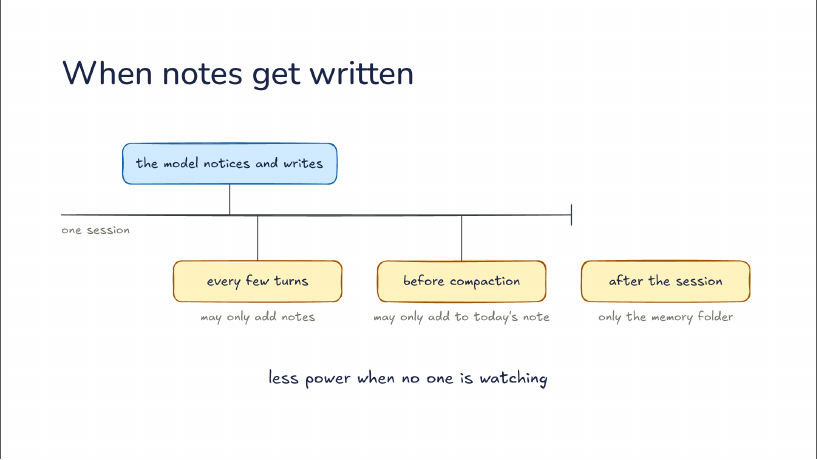
讲者备注：到目前为止是模型注意到并写下，在一次会话的时间轴上可以发生在任何一轮；但这也不可靠，深陷任务的模型常常不会停下来存。所以 harness 加上自己的时机，下面三个各来自一个不同的 harness。每隔几轮，harness 给对话的一份副本一个问题：这里有什么值得存吗？这份副本只能新增笔记，绝不能删除，因为没人读它写了什么。
compaction 之前，每当上下文填满，harness 多跑一轮，把总结即将丢掉的东西存下来；这个 harness 在常规笔记旁为每天保留一份日志，这一轮只能往日志里今天的那条加内容，碰不到常规笔记。会话之后，第二个模型读完整段会话，存下值得留的东西；它可以改写笔记，但只限记忆文件夹，没有网络，也没人审批。
规律是：没人看着时，权限更小。不是对笔记的权限更小——会话之后的写手能改写笔记——而是对记忆以外的触及更少。一条坏笔记会在之后每次会话里回来，所以一个没人看着的写手只能碰记忆，别的什么都碰不到。
都是你能打开、读、改的普通文件
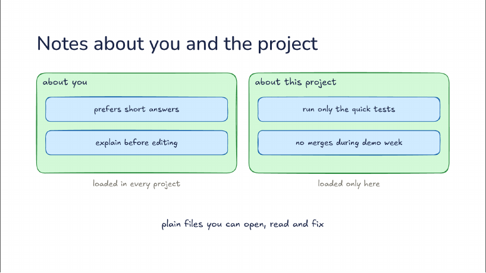
讲者备注：笔记住在哪？有些关于你：喜欢简短回答、编辑前先解释，这些在每个项目都加载。另一些关于这个项目：只跑快速测试、demo 周不合并，只在这里加载，所以一个仓库的事实永远不会漏进另一个。
两种都是你能打开、阅读、修改的普通文件。不应该只有模型才能纠正一条记忆。

讲者备注：课间，5 分钟后回来。
记忆只在会话开始加载一次，所以一直留在缓存里
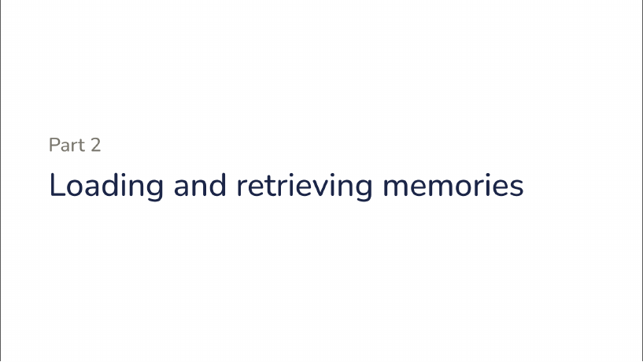
讲者备注：第二部分，加载和检索记忆。
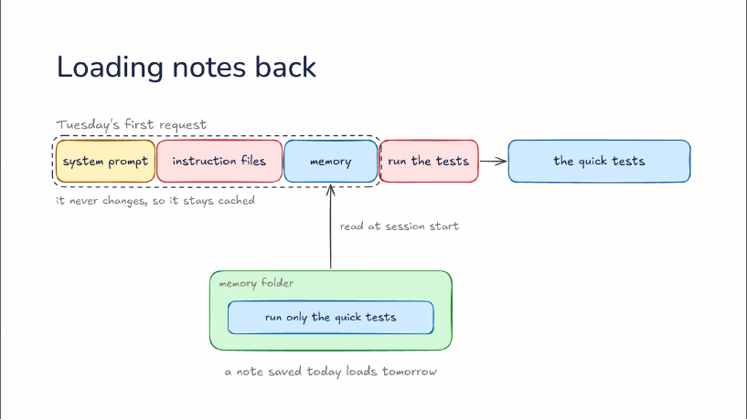
讲者备注：有记忆的周二第一个请求：系统提示、你的指令文件、记忆，然后是「跑测试」。记忆和你写的指令放在一起，在你的消息之前。它来自记忆文件夹，harness 在会话开始时读取笔记，这里就是「只跑快速测试」。于是模型第一次就跑快速测试，没人需要再纠正一遍。
记忆只加载一次，所以会话中从不改变，所以一直留在缓存里——第 15 讲说过，这正是重发变便宜的原因。代价是：今天存的笔记，明天或下一次 compaction 之后才会加载。
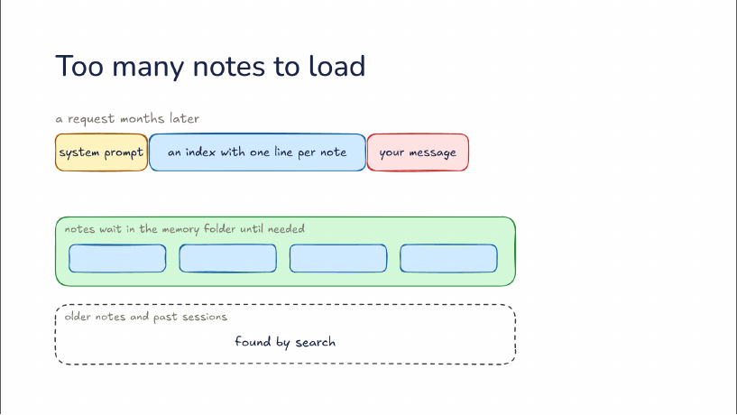
讲者备注：几个月后的一个请求：系统提示，然后是每一条笔记，在每个请求里，在你的消息之前——每个请求都为关于别的工作的笔记付钱。所以 harness 加载一个索引，每条笔记一行，你的消息跟在后面；笔记在记忆文件夹里等到需要时再读。索引行就是每条笔记的第一行，就是那行为了日后找到它而写的。
再往后，更旧的笔记和过去的会话多到连索引都装不下，它们靠搜索找到。
索引行要像 skill 描述那样写：它决定其余部分会不会被读
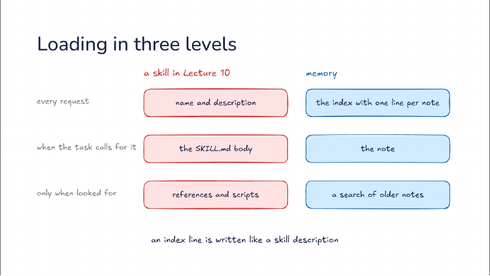
讲者备注：这是第 10 讲的 skill：名字和描述进每个请求，SKILL.md 正文在任务需要时才来，references 和脚本只在去找时才来。记忆有同样的第一层：每条笔记一行的索引。
然后是那条笔记，当它那一行与任务匹配时被读取；然后是搜索更旧的笔记，第三层。
所以索引行要像 skill 描述那样写。它决定其余部分会不会被读，一行含糊的索引意味着那条笔记永远不会回来。
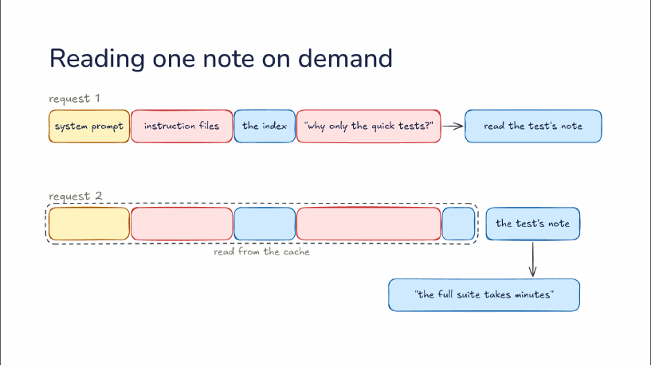
讲者备注：新会话的请求 1：系统提示、指令文件、索引和你的问题：为什么只跑快速测试？索引行说了做什么，没说为什么。所以模型的回答是一次工具调用：读测试那条笔记。
请求 2 重发所有内容，从缓存读，在末尾加上测试笔记。现在模型能回答了：全套要好几分钟。多一次请求，和第 10 讲加载一个 skill 的代价一样。
按意思搜；先核对再照做
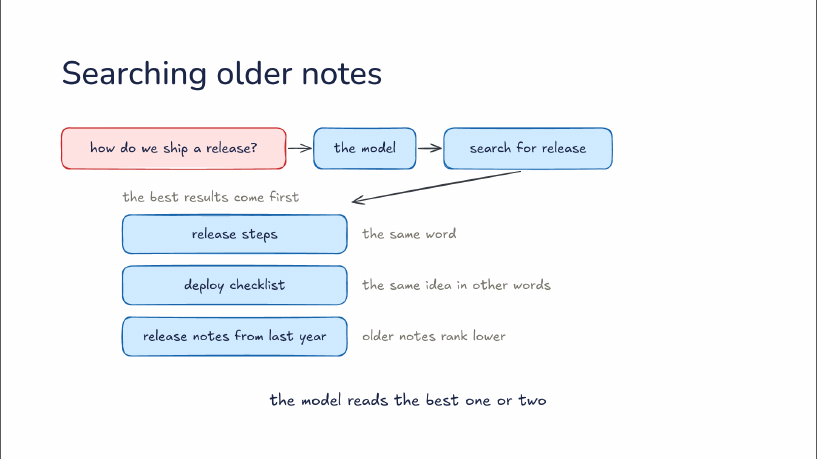
讲者备注：你问：我们怎么发布一个版本？索引里没有匹配的，于是模型调用搜索工具搜 release，最好的结果排在前面。release steps：同一个词。deploy checklist：同一个意思换了说法，按意思搜索能找到它，虽然它从没说过 release。
去年的 release notes：更旧的笔记排得更低，因为更可能已经过时。模型读最好的一两条，方式和读索引里的笔记一样。
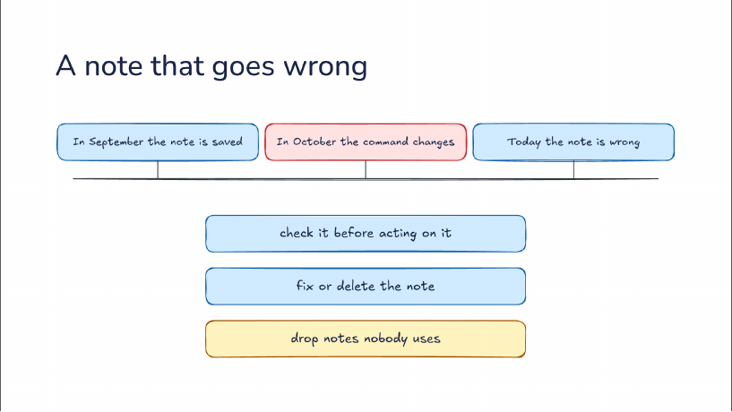
讲者备注：9 月存下了这条笔记，里面有跑测试的命令。10 月命令变了，没有任何东西告诉这条笔记。今天这条笔记是错的，而且在每次会话里都加载。
三个修法。照做之前先核对：一条提到文件或命令的笔记，先拿代码对一遍。发现错了就修正或删掉这条笔记。harness 还可以丢掉没人用的笔记：模型几周没用过的笔记会过期淘汰。
谁写的、是什么——四种都先读索引
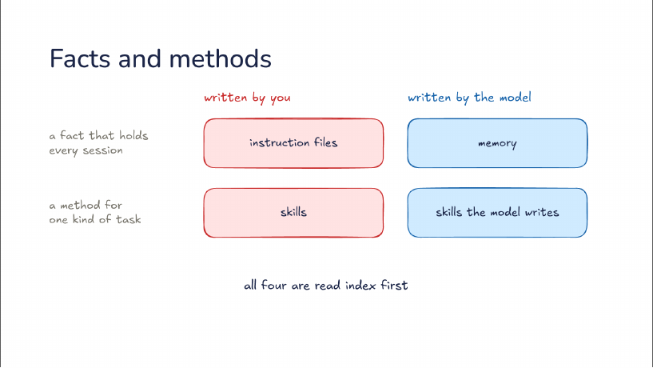
讲者备注：两个问题能给模型知道的东西分类：谁写的，以及它是哪一类东西。你写的、每次会话都成立的事实放进指令文件；你写的某类任务的方法放进 skills。模型写的事实就是记忆。
模型学到的方法变成模型自己写的 skills：做完一个难任务后，有些 harness 把步骤存成一个 skill，之后只在那类任务出现时加载。四种都先读索引，所以不管谁写的，一行短短的描述决定其余部分会不会被读。第 17 讲会加上从文档构建的知识。
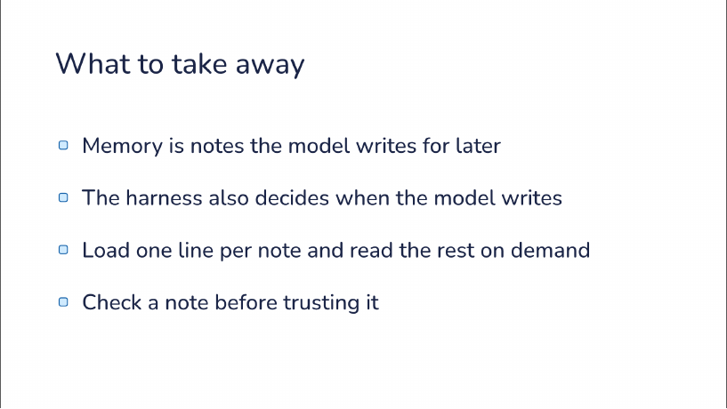
讲者备注：记忆是模型为以后写下的笔记。harness 也决定模型什么时候写。
每条笔记只加载一行，其余按需读取。信一条笔记之前先核对。
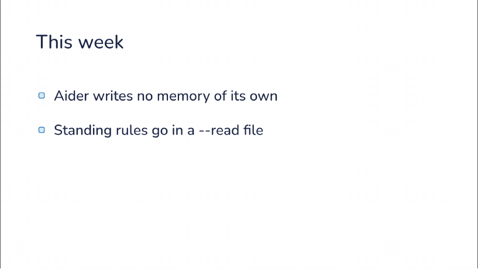
讲者备注：Aider 自己不写记忆：它的聊天历史文件是一份逐字记录，只有你让 Aider 恢复聊天历史时才会回来。长期规则放进一个 --read 文件，也就是你在命令行传进去的一份约定文件——那是你写的指令，不是记忆。
文档、论文与源码
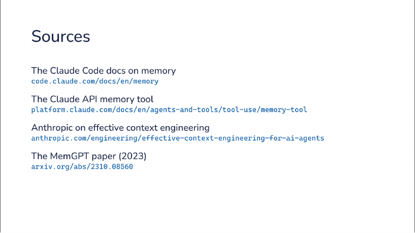
讲者备注：Claude Code 关于记忆的文档、Claude API 的记忆工具、Anthropic 关于有效上下文工程的文章，以及 2023 年的 MemGPT 论文。
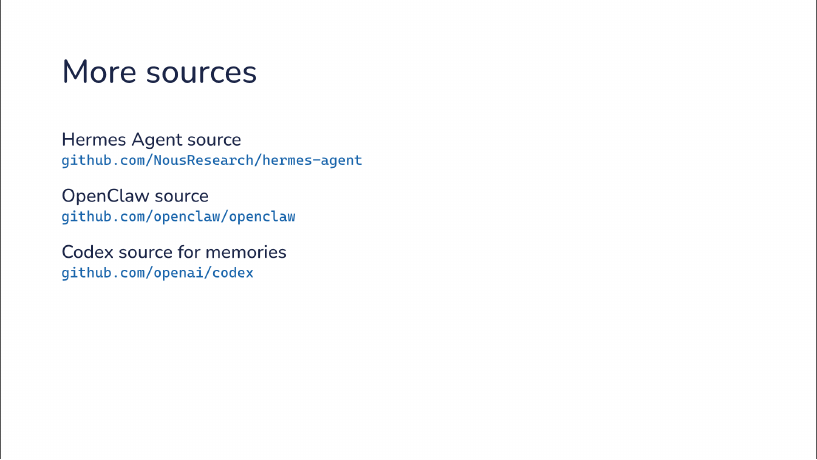
讲者备注：Hermes Agent 的源码、OpenClaw 的源码，以及 Codex 里关于记忆的源码。第 11 页三个写入时机各对应哪个 harness，讲者没有逐一点名，未确认。
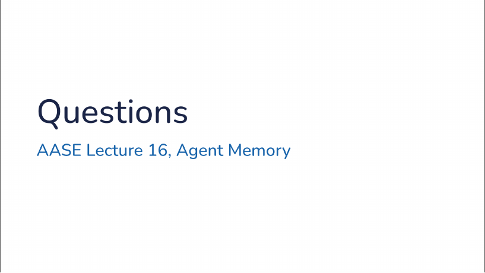
最后一页是答疑：讲者只说了一个词「Questions」，剩下的时间留给提问；课上的问答没有收录在材料里，未确认。